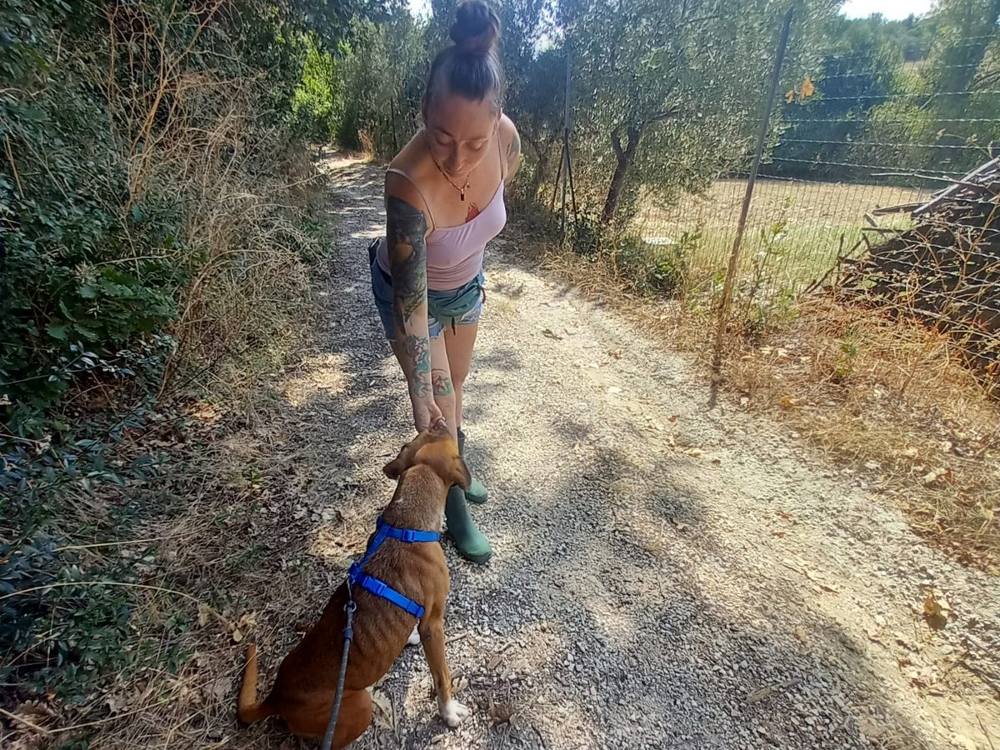
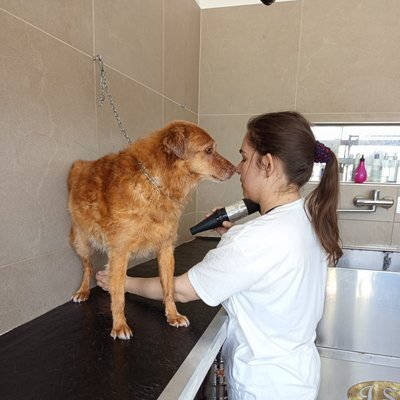
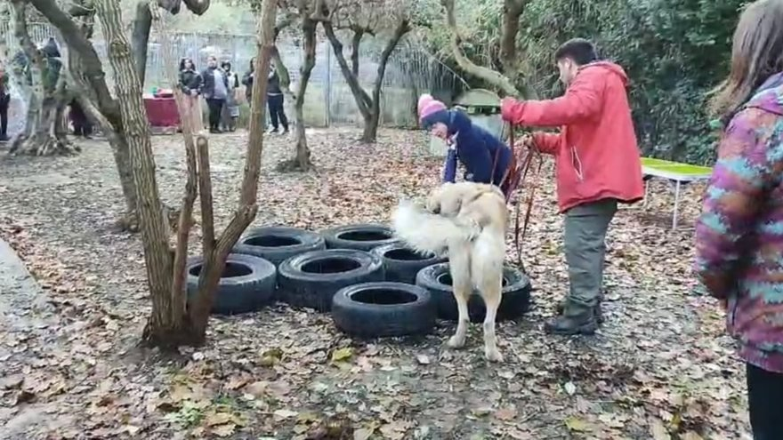
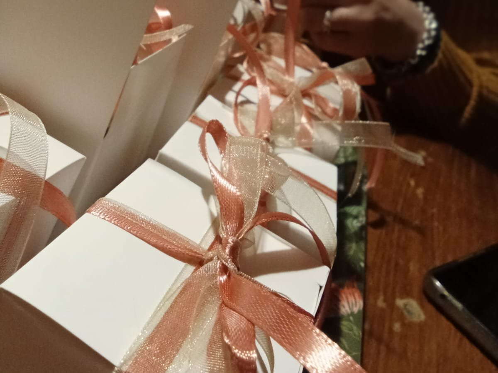

I servizi che offriamo sostengono direttamente il rifugio: ogni lavaggio, ogni giorno di pensione, ogni percorso di educazione si trasforma in cibo, cure e una nuova possibilità per chi sta ancora aspettando casa.
🐾 Tutti i nostri servizi sono riservati ai soci di Impronte ODV. Tesserarsi è semplice e ci sostiene direttamente. Scrivici per saperne di più →
Tre servizi per i cani di proprietà — gestiti da chi i cani li conosce davvero — e le bomboniere solidali per le tue occasioni speciali. Ogni gesto sostiene direttamente il rifugio.

Lo accogliamo in spazi puliti, con aree verdi dove correre e giocare. Ogni giorno se ne occupano le stesse persone che seguono i cani del rifugio.

Lo laviamo, asciughiamo e spazzoliamo con calma e con i prodotti giusti per il suo pelo. Se ne occupa chi i cani li conosce bene: resta sereno anche se non è il suo momento preferito.

Percorsi su misura guidati da istruttori qualificati: educazione cinofila, avviamento agli sport, mantrailing, mobility, ricerca olfattiva e avvicinamento all'acqua.

Matrimoni, battesimi, comunioni, lauree, compleanni: trasforma la bomboniera tradizionale in una donazione concreta. Personalizziamo insieme messaggio e dettagli.
Chi si occupa del tuo cane è la stessa persona che ogni giorno segue gli ospiti del rifugio. Esperienza vera, non improvvisata.
Tutto quello che entra con i servizi va agli ospiti che aspettano una famiglia: cibo, cure, una nuova possibilità.